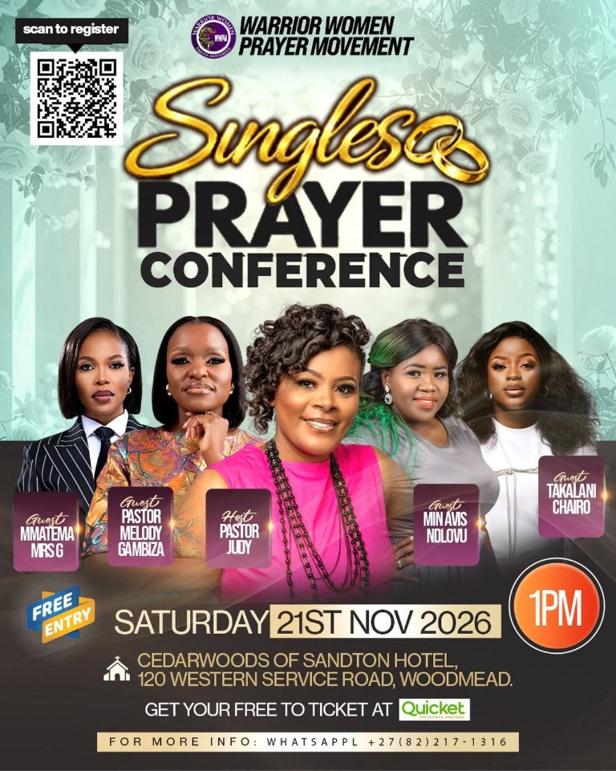

3 HRS Prayer Stretch
Every 2nd Saturday · 1:00–5:00 pm
Johannesburg Central merged with Sandton. Join us for a focused time of prayer, worship and intercession.
Good company. Open hearts. Time in prayer. Come be part of what God is doing in the lives of women.
Join Pastor Judy and the Warrior Women community for 3 HRS Prayer Stretch gatherings in Sandton and Pretoria, plus online prayer and encouragement.
Every 2nd Saturday · 1:00–5:00 pm
Johannesburg Central merged with Sandton. Join us for a focused time of prayer, worship and intercession.
Every 3rd Saturday · 1:00–5:00 pm
Come together for a shared time of worship, prayer and encouragement in Pretoria.
First Wednesday monthly
Live encouragement and faith-filled conversation for those trusting God for marriage. Meeting details are shared privately; get in touch.
First Wednesday monthly · Zoom & YouTube
Join us as we pray our way into a new month and take authority over what God has prepared. Contact us for the meeting details.
Seasonal gathering
Open-hearted worship, prayer and fellowship for women who want to be refreshed and strengthened together.
Looking for one-off gatherings and special event announcements? New dates appear here as they are announced. Our regular monthly prayer programs are listed above.

Open poster to scan the registration codeAre you single and trusting God for a spouse?
We believe God is the author of marriage and desires for people to build godly marriages. Join us for a one-day prayer conference as we pray against barriers to marriage, stand against marital delay and trust God for open doors.
Single women and men are warmly welcome. Come ready to pray, worship and receive encouragement.
Guest ministers: Rutendo Melody Kanguru Gambiza, Mmatema MrsG, Takalani Chairo and Avis Ndlovu.
1:00 pm · Free entry
CedarWoods of Sandton Hotel120 Western Service Road, Woodmead
“Not one shall lack her mate. For My mouth has commanded it, and His Spirit will gather them.”Isaiah 34:16
Get your free ticket on Quicket by scanning the QR code on the poster. For more information, WhatsApp +27 82 217 1316.
You shall not miss your mate in Jesus’ name.
Have a question about a program or would you like to join us? We would be delighted to hear from you.
Celebrate the worship, teaching and fellowship captured at the Daughters of Zion 2026 gathering.

Step inside a gathering filled with worship, teaching, prayer and fellowship among women.
Explore the galleryRead about a Warrior Women prayer walk held during Women’s Month in August 2026, and the heart behind praying for our city and nation.

Discover how women gathered to pray for their city, families and nation during a community prayer walk.
Read the story